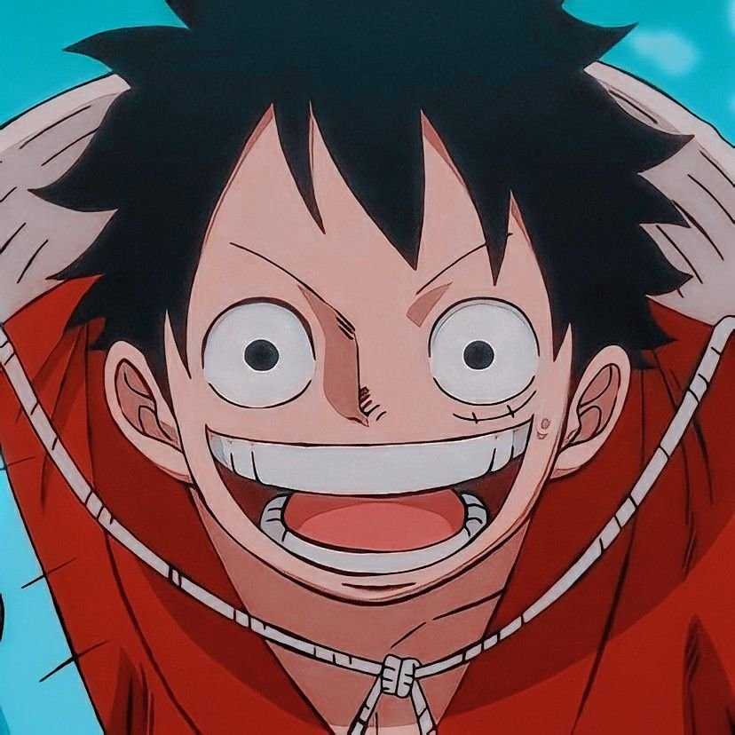

Apresentando os Chapéus de palha (east blue)

Monkey D. Luffy , também conhecido como "chapéu de palha Luffy" e geralmente como "chapéu de palha" ,
é o principal personagen da manga e anime , one piece . Ele é o fundador e capitão dos cada vez mais
famosos e poderosos Piratas do Chapéu de Palha , bem como um de seus melhores lutadores.Seu sonho de
toda a vida é se tornar o Rei dos Piratas, encontrando o tesouro lendário deixado para trás pelo falecido
Gol D. Roger .Ele acredita que ser o Rei dos Piratas significa ter a maior liberdade do mundo
Zoro o imediato do bando pirata dos Chápeus de palhas seu sonho é ser maior espadachim do mundo.

Sanji o cozinheiro do bando dos chápeus de palha, seu sonho é encontrar o mar lendario All blue
Usopp o atirador do bando, quer ser tornar um grande guerreiro do mar e se encontrar com seu pai um pirata muito famoso no novo mundo!

Nami a navegadora do bando, quer fazer um mapa mundi algo que ninguem fez ate hoje no mundo!
Monkey D. Luffy , também conhecido como "chapéu de palha Luffy" e geralmente como "chapéu de palha" , é o principal personagen da manga e anime , one piece . Ele é o fundador e capitão dos cada vez mais famosos e poderosos Piratas do Chapéu de Palha , bem como um de seus melhores lutadores.Seu sonho de toda a vida é se tornar o Rei dos Piratas, encontrando o tesouro lendário deixado para trás pelo falecido Gol D. Roger .Ele acredita que ser o Rei dos Piratas significa ter a maior liberdade do mundo
Zoro o imediato do bando pirata dos Chápeus de palhas seu sonho é ser maior espadachim do mundo.
Sanji o cozinheiro do bando dos chápeus de palha, seu sonho é encontrar o mar lendario All blue
Usopp o atirador do bando, quer ser tornar um grande guerreiro do mar e se encontrar com seu pai um pirata muito famoso no novo mundo!
Nami a navegadora do bando, quer fazer um mapa mundi algo que ninguem fez ate hoje no mundo!